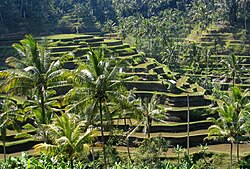
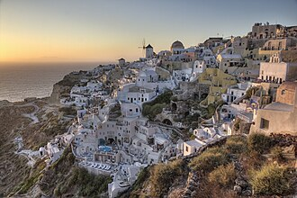
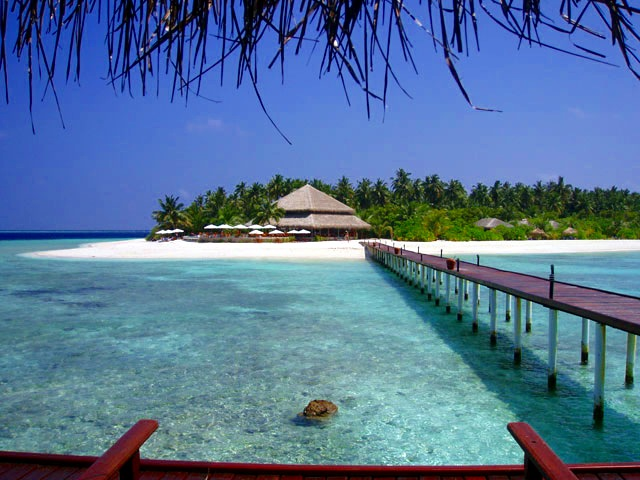

Dream Destinations
Bali, Indonesia

- Bali is a tropical paradise
featuring stunning beaches
- The island is home to ancient.
temples, rice terraces, and
wildlife including elephants and orangutans.
- The island offers a perfect blend of adventure, relaxation,
and spiritual experiences through its Hindu temples
and yoga retreats
- For more INfo CLick Here
Santorini, Greece

- amous for its iconic white-washed
buildings with blue domes,
- The island features unique
black and red volcanic sand beaches
- The local cuisine includes fresh seafood
and Mediterranean dishes paired
with excellent local wines
- For more INfo CLick Here
The Maldives

- This Indian Ocean archipelago consists of
over 1,000 coral islands
offering crystal-clear
turquoise waters and pristine white-sand beaches
- The Maldives is renowned for its luxurious overwater
bungalows,
underwater restaurants, and spectacular
marine life perfect for snorkeling and diving.
- Each resort typically occupies its own private
island,
providing ultimate privacy and serenity
- For more INfo CLick Here